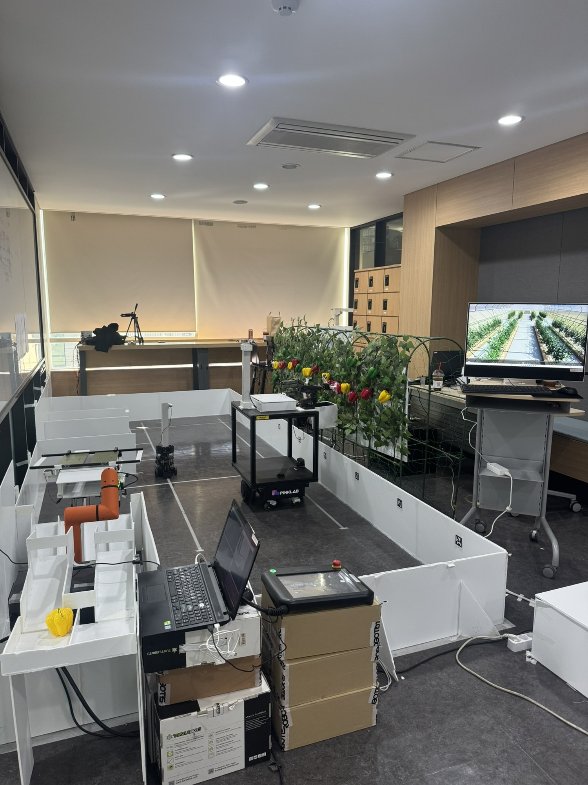
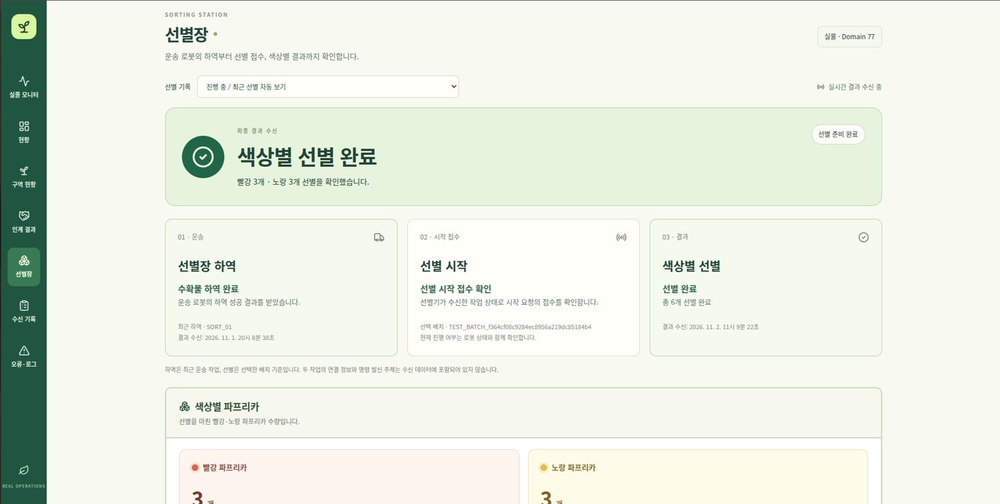
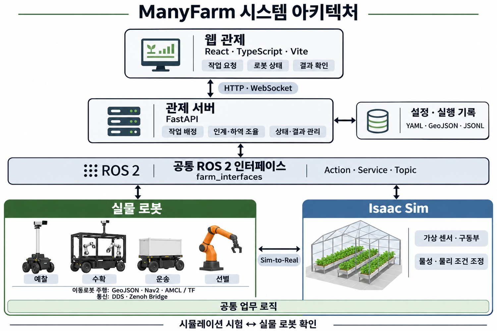
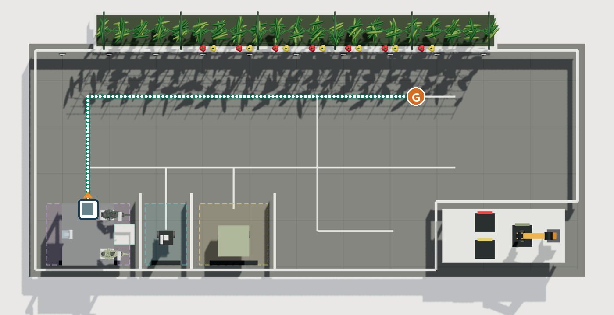
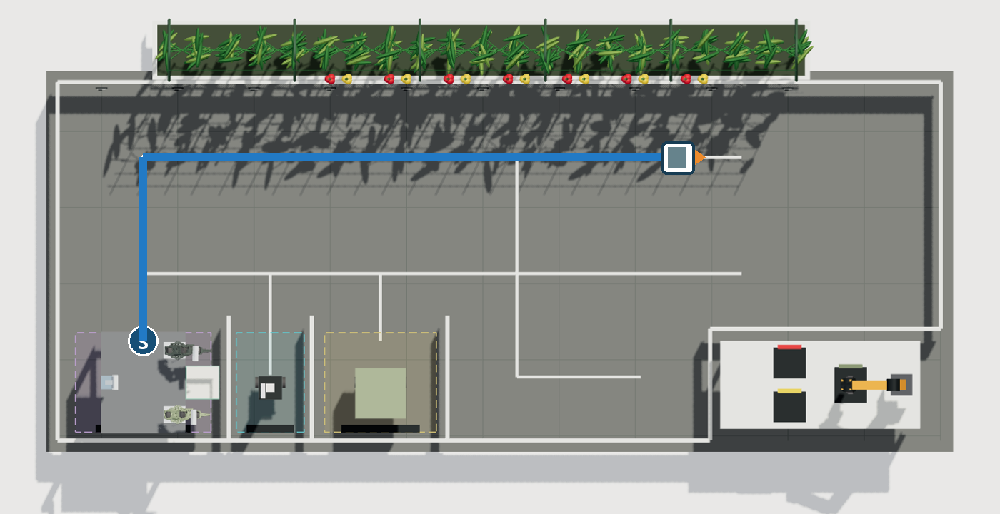
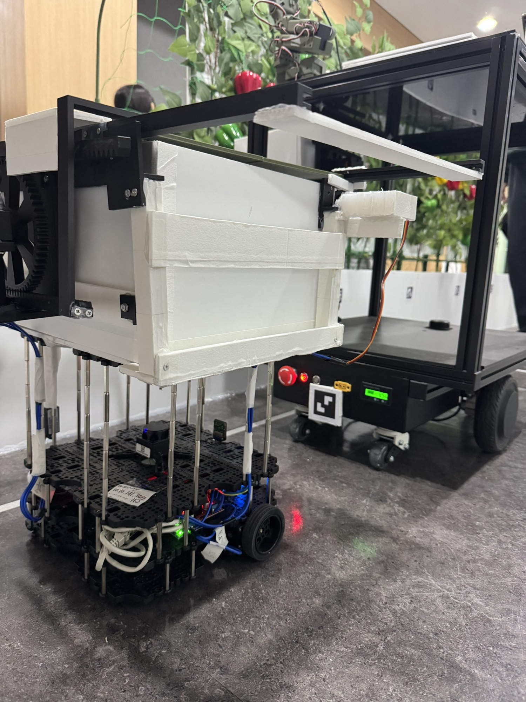
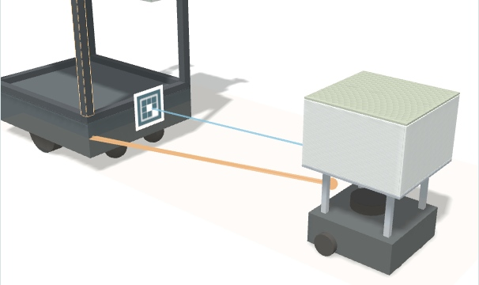

PROJECT 01 / 다중 로봇 · 주행 · 시스템 통합
Many Farm · 다중 로봇 스마트팜
예찰 작업 생성부터 운송 주행·정밀 도킹·인계까지
팀 7명 · 실물 로봇 / 웹 관제 / Isaac Sim
예찰로봇이 만든 작업 정보를 바탕으로 수확·운송·선별 로봇이 협업하는 스마트팜 시스템입니다.
담당 역할
- 주행 구현
- GeoJSON·Dijkstra 경로 생성과 Nav2 FollowPath 연결
- 예찰 개발
- 정지 관측·과실 매칭·작업 윈도우 및 수확 정차점 생성
- 후반 운송 통합
- ArUco·LiDAR 정밀 접근과 인계·하역·복귀 상태 연결
- 실행 상태 제어
- ROS 2 Action/Service와 FSM으로 이동·작업·장치 완료 조건 연결
팀 담당: 인식 모델 학습, 수확팔, 운송 기구·펌웨어, 웹 관제, 시뮬레이션

실물 시험 공간 · 예찰·수확·운송·선별 장치
팀 웹 관제 · 작업 상태와 선별 결과시스템 구성과 작업 흐름
- 01예찰
관측·작업 생성 - 02수확
정차·재인식·수확 - 03운송
인계·이송·하역 - 04선별
색상 분류

관제 - ROS 2 공통 인터페이스 - 실물·시뮬레이션SHIN DONGMIN / PORTFOLIOMANY FARM / OVERVIEW
PROJECT 01.1 / 개인 구현 · 경로 생성
GeoJSON에서 작업 목표까지 경로 생성
방향 그래프 · Dijkstra · 간선 중간 목표 · ROS 2 Path
노드·간선으로 정의한 주행선에서 목표까지의 경로를 계산하고, Nav2가 따라갈 좌표 목록으로 변환했습니다.
 실제 PGM + GeoJSON · S 시작 / G 목표 / 초록선 선택 경로
실제 PGM + GeoJSON · S 시작 / G 목표 / 초록선 선택 경로4.239 m 경로→110개 Path 좌표→FollowPath / RPP
- 경로 탐색
- 방향 간선의 거리 합을 비교하는 Dijkstra로 연결 경로 선택
- 작업 목표 연결
- 목표를 가까운 간선에 투영하고, 마지막 간선은 목표까지만 사용
- 주행 명령 생성
- 최대 4cm 간격으로 보간하고 최종 작업 방향 yaw를 포함해 FollowPath에 전달
목표마다 노드를 추가하지 않아도 작업 위치까지 연결4cm는 Path 좌표 간격이며 주행·정차 정확도를 뜻하지 않습니다.
10월 31일 지도 · 시작 (0.046, -1.120) m, 목표 (3.200, -0.035) m.
저장소 RouteGraph.plan() 계산 예시이며 실측 주행 궤적은 아닙니다.
SHIN DONGMIN / PORTFOLIOMANYFARM / ROUTE PLANNING
PROJECT 01.1 / 경로 생성 이후 · 추종 과정
생성한 경로를 따라 목표까지 이동
초록: 생성 경로 · 파랑: 이동한 구간 · 로봇 표시: 현재 위치

01 · 경로 생성 완료
시작점에서 목표까지의 전체 Path가 준비된 상태

02 · 경로를 따라 이동
방향을 바꾸고 경로 중간 지점까지 이동한 상태

03 · 목표점 도착
간선 끝 노드까지 가지 않고 지정한 작업 위치에서 종료
구현 연결 RouteGraph → Path 보간 → Nav2 FollowPath → RPP 속도 명령
계산 경로의 이동 순서를 3D 탑뷰 위에 표시한 설명용 정지 화면입니다.
RPP 실행 로그·물리 시뮬레이션·실물 주행 기록을 재현한 그림은 아닙니다.
SHIN DONGMIN / PORTFOLIOMANYFARM / PATH FOLLOWING
PROJECT 01.2 / 개인 구현 · 예찰
RGB-D 관측을 수확 작업으로 변환
동일 과실 매칭 · 작업 윈도우 갱신 · 차체 정차점 생성
과실 좌표만으로는 수확로봇이 설 위치를 정할 수 없습니다. 관측 결과를 누적하고, 팔이 작업할 영역과 차체가 이동할 목표를 구분해 관제로 전달했습니다.
 좌측 영역 확대 · 과실 ID와 W003·W004의 작업 수량
좌측 영역 확대 · 과실 ID와 W003·W004의 작업 수량 우측 영역 확대 · W005·W006의 과실 소속과 작업 수량
우측 영역 확대 · W005·W006의 과실 소속과 작업 수량SHIN DONGMIN / PORTFOLIOMANY FARM / SCOUTING
PROJECT 01.2 / 예찰 · 구현과 문제 해결
동일 과실 매칭과 작업 배정
관측 누적 → 대표 위치 갱신 → 작업 윈도우·정차점 생성
- 01경로 이동·정지
- 02RGB-D 관측 누적
- 03ID 매칭·윈도우 갱신
- 04수확 정차점 생성
주요 구현
- 관측 FSM
- 정지 확인 뒤 관측하고, 결과 저장 후 다음 관측 또는 복귀 상태로 전환
- 데이터 연관
- 거리 기준 안의 후보를 일대일 매칭하고, 대응이 없는 관측만 새 ID로 등록
- 대표 위치 갱신
- 관측 이력을 누적하고 중앙값 재검증 정책으로 대표 좌표·기존 윈도우 소속 재검토
- 정차 목표 계산
- 작업 윈도우 중심과 팔 장착 오프셋으로 차체 목표를 계산하고 수확 주행 그래프 라인에 배치
과실 위치 ≠ 차체 정차 위치관측 과실 → 작업 윈도우 중심 → 팔 오프셋 반영 → 주행선 위 차체 목표수확팔은 도착 후 대상을 다시 인식해 작업합니다.
문제 해결 · 같은 과실의 중복 등록
- 문제
- 관측점이 달라지면 같은 과실의 좌표가 달라져 새 ID로 쌓이거나 윈도우 소속이 변했습니다.
- 해결 방안
- 과실 매칭과 윈도우 배정을 분리했습니다. 기존 ID에 관측을 누적한 뒤 대표 위치를 갱신하고, 기존 창의 소속·겹침을 다시 판단했습니다.
- 해결 결과
- 기존 ID를 유지하며 작업 배정을 갱신하는 흐름을 구현했습니다. 실제 과실 대응률과 중복·누락은 추가 검증 대상입니다.
SHIN DONGMIN / PORTFOLIOMANY FARM / SCOUT IMPLEMENTATION
PROJECT 01.3 / 개인 구현 · 후반 운송 통합
마커·LiDAR 도킹과 인계 상태 제어
ArUco 상대 위치 접근 · LiDAR 최종 정차 · 인계·하역 상태 제어
운송로봇의 정밀 도킹과 팀원 기구 서비스의 개폐·인계·하역 동작을 하나의 실행 흐름으로 통합했습니다.
- 정밀 접근
- ArUco 상대 위치 기반 접근과 LiDAR 기준면 거리 제어 연결
- 인계 조건
- 도착·준비·개폐·인계 완료·이탈 조건을 나누고 상태 전환에 연결
- 장치 서비스
- 팀의 기구 제어 서비스와 운송 상태를 연동해 하역·복귀까지 통합

실물 도킹 · 운송로봇과 수확로봇의 인계 위치- 01경로 주행
- 02마커 확인·LiDAR 접근
- 03인계·하역 완료 확인
- 04이탈·스테이션 복귀
문제 해결 · 접근 중 바뀌는 LiDAR 기준면
- 문제
- LiDAR 높이는 고정돼 있어도 접근하면서 수확로봇의 바퀴·기둥이 번갈아 잡혀 거리 기준이 달라졌습니다.
- 해결 방안
- 거리값 보정보다 연속된 면 확보가 필요했습니다. 작은 폼보드를 부착해 기준면을 넓히고, 마커로 확인한 대상의 같은 면을 추적했습니다.
- 해결 결과
- 폼보드와 기준면 추적을 결합해 해당 도킹 문제를 해결했습니다. 반복 정차 위치·방향 오차의 정량 평가는 남은 과제입니다.
SHIN DONGMIN / PORTFOLIOMANY FARM / TRANSPORT
PROJECT 01.3 / 운송 · 도킹 기준면 비교
LiDAR가 계속 볼 수 있는 면 만들기
고정된 센서 높이에서 접근 · 작은 폼보드로 기준면 확장

01 부착 전 · 접근하면서 수확로봇의 바퀴·기둥이 잡혀 거리 기준이 달라짐 02 부착 후 · 마커로 확인한 대상의 폼보드 기준면을 계속 추적
02 부착 후 · 마커로 확인한 대상의 폼보드 기준면을 계속 추적동작 원리를 설명하는 3D 재구성입니다. 로봇 위치·크기는 설명용 근사입니다.
SHIN DONGMIN / PORTFOLIOMANY FARM / DOCKING REFERENCE